Un siglo del Capitolio Nacional
LAS PERSONAS DETRÁS DE LA CONSTRUCCIÓN
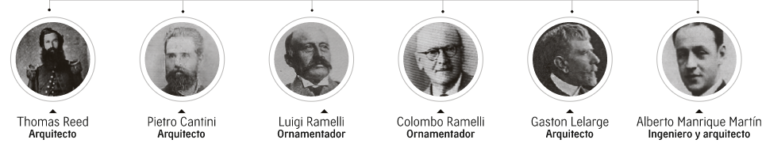
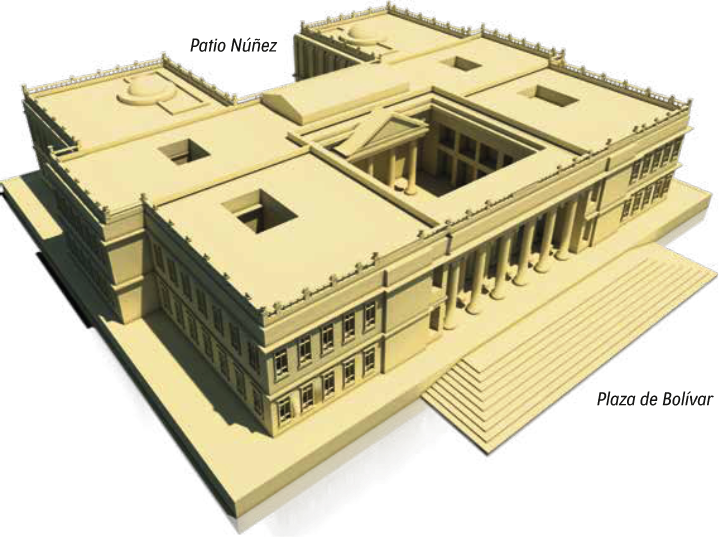
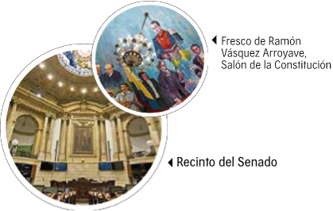
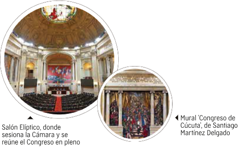
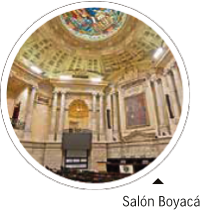
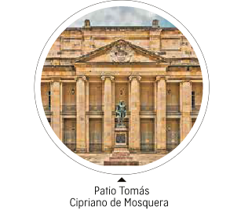
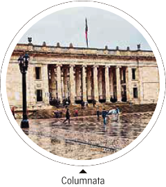
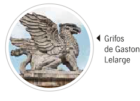
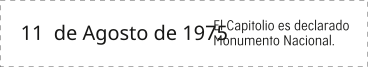
DEL SOLAR COLONIAL AL CAPITOLIO
![Línea de tiempo de la historia del Capitolio Nacional:
- **1557:** La Real Audiencia se instala en el costado sur de la Plaza Mayor, donde hoy está el Capitolio.
- **1786:** Un incendio de doce días arrasa el palacio virreinal.
- **1811-1816:** Las Provincias Unidas de la Nueva Granada tienen cuatro capitales: Ibagué, Villa de Leyva, Tunja y Santafé.
- **1812:** Se instala en Villa de Leyva el Congreso General de las Provincias Unidas, presidido por Camilo Torres.
- **1823:** El viajero francés Gaspard Mollien encuentra la Cámara en una casa arrendada con venta de aguardiente en el primer piso. En la escalera se leía «No hay Patria sin leyes».
- **1826:** El Senado sesiona en un ala del convento de los dominicos. El sueco Carl August Gosselman cuenta 48 sillas.
- **1834:** Un decreto de Santander ordena reunir los poderes en un solo edificio y buscar un arquitecto, pero no lo consiguen.
- **1846:** La Ley del 17 de marzo, expedida durante el gobierno de Tomás Cipriano de Mosquera, ordena construir la sede de los Altos Poderes.
- **1926:** No tuvo inauguración oficial. Se considera terminado el 7 de agosto de 1926, con la posesión de Miguel Abadía Méndez.](./assets/6pc-mo.svg)
CÓMO ESTÁ CONFORMADO EL CONGRESO 2026-2030
TOTAL CONGRESISTAS
286
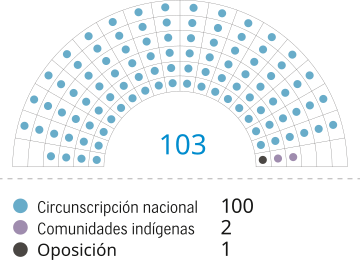
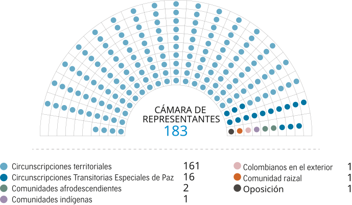
¿QUÉ HACE?
Constituyente
Reforma la Constitución con
actos legislativos.
Legislativa
Hace, interpreta, reforma y
deroga las leyes.
Judicial
Juzga excepcionalmente a altos
funcionarios del Estado.
Electoral
Elige a algunos altos
funcionarios, como el contralor y el procurador.
Control político
Cita y cuestiona a
ministros y otros funcionarios del Gobierno.
Control público
Puede citar a cualquier
persona a declarar en sus comisiones.
Administrativa
Organiza su propio
funcionamiento.
Protocolaria
Recibe a jefes de Estado y de
Gobierno de otros países